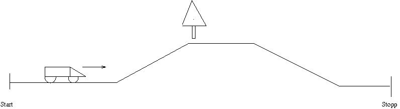
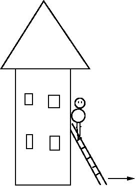

MAT100 for Data
Uke 18
29.04.2015
Alexander
Trykk SPACE for å gå fremover, ESC for oversikt over slidesSist uke
Lineære transformasjoner (Kap. 9.5)
Litt om egenverdier og egenvektorer (Kap. 10.1)
Denne uken
Prøve på mandag
Egenverdier og egenvektorer (10.1)
Diagonalisering og matrisepotenser (10.3)
Veien mot eksamen
Eksamen mandag 8. juni
Fire forelesninger og to øvinger igjen (inkludert i dag)
- I dag: Fullfører pensum
- I morgen: Oppsummerer lineær algebra. Repetisjon. Gjennomgang av tidligere eksamensoppgaver
- Øving 4. mai: Vanlig øving
- Onsdag 6. mai: Gjennomgang av tidligere eksamensoppgaver
- Torsdag 7. mai: Gjennomgang av tidligere eksamensoppgaver
- Øving 11. mai: Spørretime
- Mandag 1. juni: Spørretime 14:00–16:00 i D112
Introduksjon
MAT100 omhandler hovedsakelig KALKULUS, som studerer forandring og forhold mellom funksjoner

funksjoner, grenser, derivasjon, integrasjon, differensialligninger, ...
Lag oversikt over pensum, med nøkkelord.
Eksempel: Distanse og fart
- Gitt for bilen er i ethvert tidspunkt, hva er farten?
- Gitt farten, hvor er bilen etter en viss tid?
I tillegg:
- Numeriske metoder (inkludert noe bruk av MATLAB)
- Lineær algebra (matriser og lineære ligningssystemer)
Smakebit:

Stigen glipper. Hvor fort sklir den nedover veggen?
Smakebit:
Hvilke dimensjoner bør en sylindrisk beholder ha for å minimere materialkostnaden?
Smakebit
Hvor varm er kaffen etter 20 minutt?
Smakebit
Hva er volumet av vasen?
Smakebit
Går dette bra?
Smakebit
Rotasjon
Grafikk
Smakebit
Et godt stykke utenfor fokus i vårt kurs, men spill-fysikk og grafikk er basert på kalkulus, samt mye vektorregning og lineær algebra
Smakebit
Trenger
funksjoner, grenser, derivasjon, integrasjon, differensialligninger, ...
KALKULUS!
Hvorfor studere kalkulus?
- Sammen med diskret matematikk, lineær algebra og statistikk er det en del av grunnlaget for dataingeniørfaget
→ et viktig verktøy - Skjerper logisk sans, samt evnen til problemløsing
→ godt for hjernen - Kalkulus er og har vært en sentral komponent i mange beskrivelser og modeller av fenomener – naturlige og menneskeskapte/datagenererte. Uten kalkulus, intet moderne samfunn! (Og mye traustere dataspill)
→ bra for dannelsen
Tips til eksamenslesing
Jobb hardt!
- Løs oppgaver! Spesielt gamle eksamensoppgaver
- Få oversikt over pensum. Lag pensumliste med nøkkelord
- Dann kollokviegrupper
- Spør om hjelp. Under forelesninger og spørretimer, eller via epost/itsLearning
- Sjekk alternative kilder. F.eks. andre lærebøker eller Khan Academy
MAT100
Lag oversikt over pensum, med nøkkelord.
Forslag
- Bakgrunn: Trigonometriske funksjoner. Eksponensialfunksjoner. Inverse funksjoner.
- Kontinuerlige funksjoner: Grenseverdier, skjæringssetningen, midtpunktmetoden, ekstremalverdisetningen, ...
- Derivasjon: Tolkning (endringsrate, stigning til tangent, ...), Newtons metode, L'Hôpital, finne ekstremalverdier, koblede hastigheter, optimering
- Integrasjon: ...
- Differensialligninger: ...
- Lineær algebra: ...